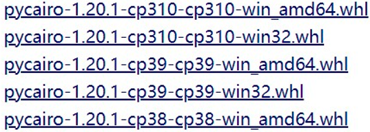
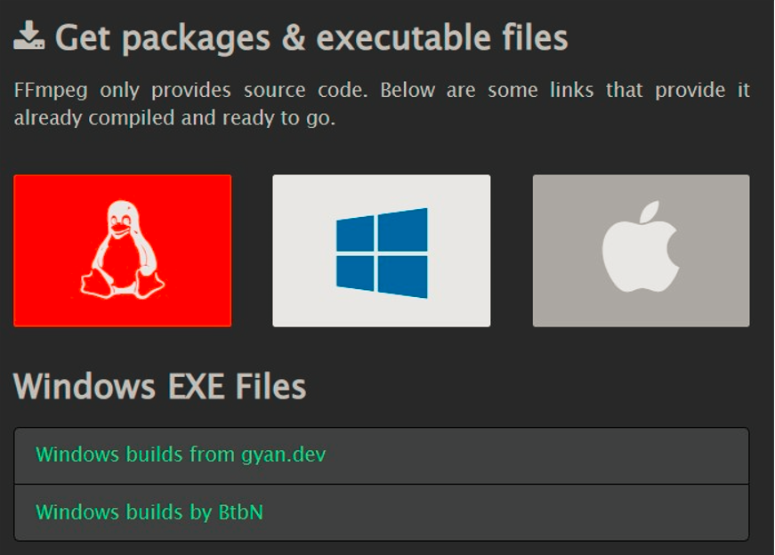
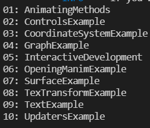
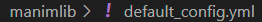
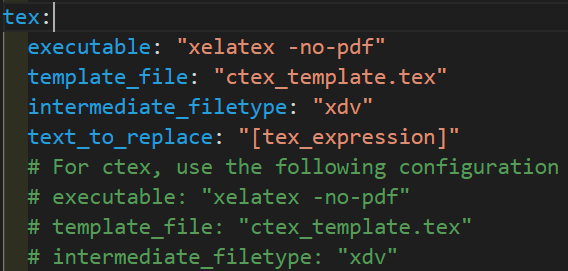
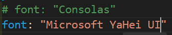

注意
環境:
- python-3.9
- manim 中 3b1b 的分支
- dvisvgm-2.12
- miktex-21.12.10 (呢個版本號好重要！！！)
- ffmpeg-2021.12.17
- Pycario-1.20.1-cp39
以下内容，新手入門，且可能僅適用於本人，敬請留意！！！
# 基本環境
# Conda
本人裝的係 miniconda
# 安裝 conda
這個唔使我講啦，一直點下一步，不過要記得勾選添加變量環境
關於 conda 的運用，可以看 conda 的基本運用
# dvisvgm
直接去官網下載，自己下最新版就得啦，我最近睇 dvisvgm 已經更新到 2.13, 裝完之後記得要添加變量，最後將文件夾的名字改成 dvisvgm, 最後將版本號刪咗佢
# sox
可以去 SourceForge 下載，呢個係下載鏈接
# Pycario
# 安裝 pycario
下載鏈接
選擇適合自己的版本

cp後邊的數字代表你的python的版本
下載后將文件放在 C 盤根目錄，右鍵，用 cmd(wt)
舊版就在文件的地址欄輸入 cmd
cd c:\ | |
pip install pycairo-1.20.1-cp39-cp39-win_amd64.whl |
# ffmpeg
下載鏈接

選擇 Windows 下載 (隨便一個啦) 埋果你的系統係 Windows
# Miklex
下載鏈接
亦有人推薦下載 texlive , 我用的時候總是報錯，所以最終都係放棄了.
安裝的時候也有一個坑，默認普通用戶安裝就得啦，裝完之後以管理員的模式打開 cmd , 輸入:
regsvr32 MiKTeX211210-packagemanager.dll | |
regsvr32 MiKTeX211210-packagemanager-PS.dll | |
regsvr32 MiKTeX211210-core.dll | |
regsvr32 MiKTeX211210-core-PS.dll |
其中，那個 211210 係你 miktex 的版本號巨坑啊 (╯‵□′)╯︵┻━┻
# 下載 Manim
下载链接
下載之後建議解壓到冇中文的路徑
進入到 manim, 運行:
pip install manimgl | |
pip install -i https://pypi.tuna.tsinghua.edu.cn/simple -r requirements.txt |
由於網絡問題，有報錯就運行多幾次，並安裝缺失的
# 調試
儅一切都安裝完后，就可以運行喇，進入到 manim 的目錄，打開 cmd, 運行:
manimgl .\example_scenes.py |
就會得到

將呢 10 個全部運行一次，埋過冇報錯的話，恭喜🎉🎉🎉, 你安裝成功
演示
# 中文支持
找到這個文件


按照注釋中的進行修改
仲要修改字體，使得支持中文字體
